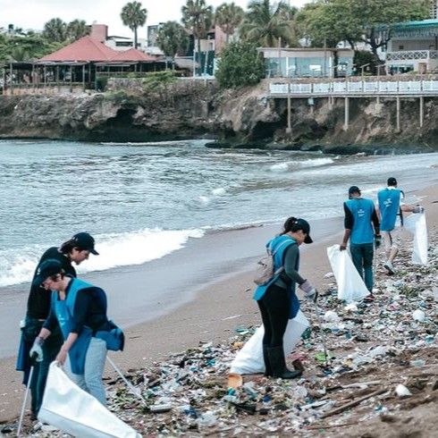

This website is dedicated to raising awareness about the
pressing issue of water pollution in the Philippines.
We will delve into the various sources of pollution, its
detrimental effects on our environment and communities, and
explore practical solutions to mitigate this crisis.
By understanding the problem and taking action, we can work
together to protect our water resources and ensure a
sustainable future for generations to come.
IMPACTS OF WATER POLLUTION
Water pollution is a major global issue that has
far-reaching consequences. Studies show that a large
number of the world's water bodies are affected by
pollution.
Like many developing nations, the Philippines
faces significant water pollution challenges. Across the
archipelago, water bodies are deteriorating due to
rapid urban growth, industrial activities, and
inadequate waste management systems.
Watch this video to further understand the problem of water pollution.
SOLUTIONS

Support Organizations
Giving support for these organizations helps them create
more effective programs with the essential resources,
educate and raise awareness, and be recognized by the public.